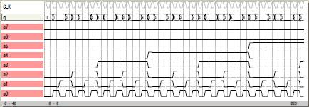
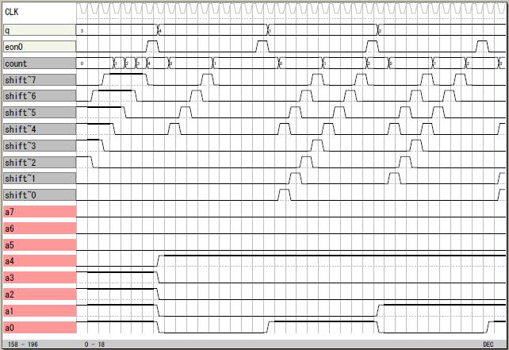

1を数える
その1
非記憶型の論理です。4ビット中の1を数える論理を2個
使って、それぞれの計数値を足して8ビット中の1の数を
求めます。
file: sample10

論理譜
logicname yahoo11
entity main
input a[8];
output q[4];
bitn noa[3];
bitn nob[3];
bitn no[4];
switch(a.0:3)
case 0b0000: noa=0;
case 0b0001: noa=1;
case 0b0010: noa=1;
case 0b0011: noa=2;
case 0b0100: noa=1;
case 0b0101: noa=2;
case 0b0110: noa=2;
case 0b0111: noa=3;
case 0b1000: noa=1;
case 0b1001: noa=2;
case 0b1010: noa=2;
case 0b1011: noa=3;
case 0b1100: noa=2;
case 0b1101: noa=3;
case 0b1110: noa=3;
case 0b1111: noa=4;
endswitch
switch(a.4:7)
case 0b0000: nob=0;
case 0b0001: nob=1;
case 0b0010: nob=1;
case 0b0011: nob=2;
case 0b0100: nob=1;
case 0b0101: nob=2;
case 0b0110: nob=2;
case 0b0111: nob=3;
case 0b1000: nob=1;
case 0b1001: nob=2;
case 0b1010: nob=2;
case 0b1011: nob=3;
case 0b1100: nob=2;
case 0b1101: nob=3;
case 0b1110: nob=3;
case 0b1111: nob=4;
endswitch
no=noa+nob;
q=no;
ende
entity sim
output a[8];
output q[4];
bitr tc[9];
part main(a,q)
tc=tc+1;
a.0:7=tc.0:7;
ende
endlogic
その2
記憶型の論理で8ビット中の1を数えます。
データをシフトレジスタに置いて下位から上位にビット
をひとつずつ送っていきます。
最上位のビットが1ならビットの計数をひとつ増やします。
これを8回行うと8ビット中の1の数が計数値に求まります。
file: sample11

論理譜
logicname yahoo12
entity main
input reset;
input a[8];
output q[4];
output eon;
bitr shift[8];
bitr count[4];
bitr no[4];
bitr point[4];
bitn point9p;
output T0P[8]; T0P=shift;
output T1P[4]; T1P=count;
if (reset)
shift=0;
else
if (point==0)
shift=a;
else
shift.1:7=shift.0:6;
endif
endif
if (reset)
count=0;
else
if (point==0)
count=0;
else
if (shift==0)
count=count;
else
if (shift.7)
count=count+1;
else
count=count;
endif
endif
endif
endif
if (reset)
no=0;
else
if (point9p)
no=count;
else
no=no;
endif
endif
if (reset)
point=0;
else
if (point9p)
point=0;
else
point=point+1;
endif
endif
if (point==9) point9p=1; endif
q=no;
eon=point9p;
ende
entity sim
output reset;
output a[8];
output q[4];
output eon;
bitr tc[9];
bitr tca[8];
bitn node_reset;
bitn node_eon;
reset=node_reset;
eon=node_eon;
part main(node_reset,a,q,node_eon)
tc=tc+1;
if (tc<5) node_reset=1; endif
if (node_reset)
tca=0;
else
if (node_eon)
tca=tca+1;
else
tca=tca;
endif
endif
a.0:7=tca.0:7;
ende
endlogic
|